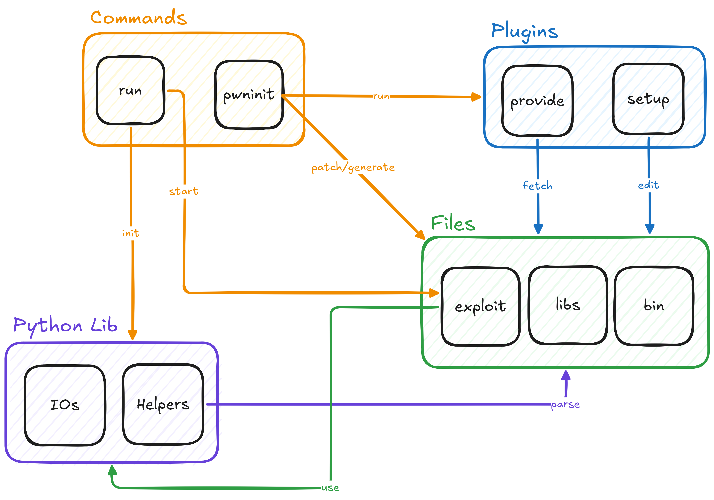

pwninit
A comprehensive Python toolkit for CTF binary exploitation challenges that streamlines the setup and execution process.
Features
- Automated binary analysis - Automatically detects and categorizes ELF binaries
- Library management - Fetches matching libc and linker libraries using libcdb
- Binary patching - Automatically patches binaries with correct libc/linker using patchelf
- Template generation - Creates exploit templates and documentation stubs
- Multi-target execution - Supports local, remote, and SSH execution modes
- Debugging support - Integrated GDB debugging with custom commands
- Provider system - Extensible system for fetching challenges from various sources (Docker, RootMe, PwnCollege)
- Utility plugins - Modular utilities for common exploitation tasks
Installation
Prerequisites
- Python 3.10+
- patchelf
- GDB (for debugging)
- Docker (for Docker provider)
Install
# Install with pipx (recommended)
pipx install pwninit.py
Usage
CLI
Check CLI - Introduction for an introduction on the commands provided.
Exploit Development
Check Pwninit for the full library API or Exploitation Development to learn how to create exploit usable with run.
Example
from pwninit import *
Config(
binary="./chall",
libc="./libc.so.6",
ld="./ld-linux-x86-64.so.2"
)
def exploit(ctx: PwnContext, ioctx: IOContext):
exe = ctx.elf
libc = ctx.libc
# Example usage:
# sl(ret2win("win")) # Generate a ret2win payload and send it
# itrv() # Go into interactive mode
success("All good!")
itrv()
Architecture
Core Components
| Module | Description |
|---|---|
pwninit.py |
Main CLI entry point for the pwninit command. Handles binary analysis, library management, and template generation. |
run.py |
CLI entry point for the run command. Manages local, remote, and debug execution modes. |
config.py |
Centralized configuration management for binary paths, libc, and provider settings. |
context.py |
Definition of global singleton instances used in exploit development. |
io.py |
I/O abstraction layer for local, remote (netcat/SSH), and debug (GDB) connections. |
kernel.py |
Kernel-specific utilities for kernel exploitation challenges. |
farm.py |
Challenge fetching and management from various providers. |
Helper Modules
| Module | Description |
|---|---|
helpers/pwncontext.py |
Defines the PwnContext class, which encapsulates the binary, libc, and execution environment. |
helpers/utils.py |
Utility functions for binary analysis, patching, and exploit development. |
helpers/constants.py |
Global constants and default values. |
Plugin System
| Plugin | Description |
|---|---|
plugins/__init__.py |
Base plugin interface and plugin manager. |
plugins/docker.py |
Docker provider for fetching binaries and libraries from Docker containers. |
plugins/rootme.py |
RootMe provider for fetching challenges from RootMe. |
plugins/pwncollege.py |
PwnCollege provider for fetching challenges from PwnCollege. |
Templates
| Template | Purpose |
|---|---|
exploit.py |
Python exploit starter template. |
exploit.c |
C exploit starter template. |
notes.md |
Challenge notes template. |
Makefile |
Build automation for exploit development. |
Architecture Diagram

License
pwninit is licensed under the GNU General Public License v3.0 (GPLv3). See the LICENCE file for details.
Support
- Documentation: pwninit.0xb0tm4n.org
- GitHub: Super-Botman/pwninit.py
- Issues: GitHub Issues
Roadmap
- CTFd Provider: Add support for fetching challenges from CTFd platforms.
- Tests: Expand test coverage for core functionality and plugins.
- More Templates: Add templates for additional exploit types (e.g., heap, format string).